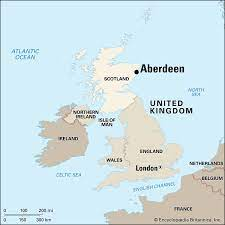

Aberdeen is a port city in northeast Scotland, where the Dee and Don rivers meet the North Sea. With an offshore petroleum industry, the city is home to an international population. It's also known as the ‘Granite City’ for its many enduring grey-stone buildings. The 19th-century Marischal College is typical – a monumental Victorian landmark that’s now headquarters of the City Council
